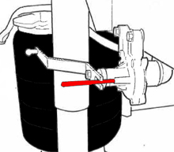

This function is used to calibrate the vehicle's drive level.
Calibrate the vehicle's drive level when:
Any level sensor has been replaced.
Work has been done on level sensor.
The control unit has been replaced.
The control unit has been reprogrammed.
If any of the bellows have been replaced.
Calibration of drive level cannot take place if fault codes are registered in the control unit. Any fault codes must be resolved. Then erased from the memory.
Test conditions:
Ignition on
Fixate the level sensors so that they lock the lever in its U-shaped slot.
All sensors must be within the approved tolerance range. Approved values are between 2.36-2.64 Volt.
Procedure:
Remove the link rods from the level sensors' levers.
Fixate the levers with, e.g., a 4 mm drill bit.
If the lever is loose against the drill, improve fixation with tape around the drill.
Press "OK" to start calibrating.
The function is done.
If the function fails, check the test conditions and repair any faults.
